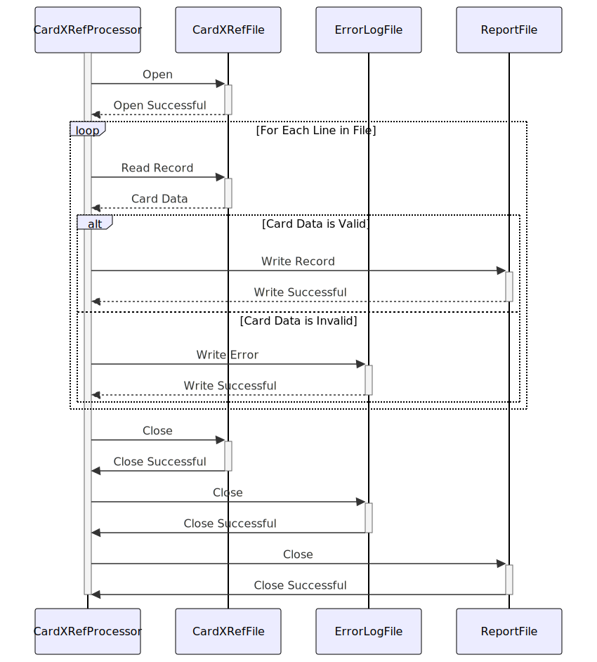

Gerado em: 1º de outubro de 2024
Título do Documento: Processador de Arquivo de Referência Cruzada de Cartão
Descrição Resumida:
Este documento descreve as especificações para um programa projetado para processar um arquivo de referência cruzada de cartão de crédito (cardxref.txt). O programa lerá o arquivo, validará cada registro e gerará um relatório de registros válidos e inválidos.
Histórias do Usuário:
Como analista de dados, preciso garantir que apenas registros de cartão de crédito válidos sejam usados para análise e geração de relatórios. Este programa me ajudará a identificar e isolar quaisquer registros inválidos no arquivo cardxref.txt.
Épico Relacionado:
10 - Gerenciamento de Arquivos de Dados: Esta história de usuário está diretamente relacionada ao gerenciamento e integridade dos arquivos de dados usados no aplicativo CardDemo.
Requisitos Funcionais:
- Leitura de Arquivo:
- O programa deve ser capaz de ler o arquivo
cardxref.txt de um diretório especificado.
- Validação de Registro:
- Cada registro no arquivo deve seguir o seguinte formato:
- Identificador do Cartão: String numérica de 19 dígitos.
- Contador/Referência: String numérica de 2 dígitos.
- O programa deve validar:
- Tipo de Dado: Garantir que tanto o identificador do cartão quanto o contador/referência sejam numéricos.
- Tamanho: Verificar se o identificador do cartão tem exatamente 19 dígitos e o contador/referência tem 2 dígitos.
- Tratamento de Erros:
- Se um registro falhar na validação, o programa deve:
- Gravar o registro inválido em um arquivo de log de erros (
cardxref_errors.log) junto com uma descrição do erro.
- Ignorar o registro inválido e continuar processando os registros restantes.
- Geração de Relatório:
- O programa deve gerar um relatório (
cardxref_report.txt) contendo:
- Um resumo dos resultados do processamento (total de registros, registros válidos, registros inválidos).
- Uma lista de todos os identificadores de cartão válidos e seus respectivos valores de contador/referência.
Requisitos Não Funcionais:
- Desempenho:
- O programa deve processar o arquivo
cardxref.txt de forma eficiente, especialmente para arquivos grandes.
- Confiabilidade:
- O programa deve ser robusto e capaz de lidar com erros inesperados normalmente.
- Manutenibilidade:
- O código do programa deve ser bem estruturado, documentado e fácil de entender e modificar.
Critérios de Aceitação:
- Processamento de Arquivo Bem-Sucedido: O programa deve ser capaz de ler e processar o arquivo
cardxref.txt sem erros.
- Validação Precisa: O programa deve validar corretamente cada registro com base nas regras definidas.
- Relatórios Abrangentes: O relatório gerado deve refletir com precisão os resultados do processamento e listar os registros válidos e inválidos conforme o esperado.
- Tratamento de Erros: O programa deve lidar normalmente com registros inválidos e registrar erros adequadamente.
Melhorias de Código:
- Modularidade: Divida o programa em funções menores e reutilizáveis para melhorar a legibilidade e a manutenção.
- Estruturas de Dados: Considere o uso de estruturas de dados apropriadas (por exemplo, matrizes, structs) para armazenar e gerenciar dados de cartão de forma eficiente.
- Validação de Entrada: Implemente verificações de validação de entrada mais robustas, como verificar a existência do arquivo antes de tentar lê-lo.
- Log: Use uma biblioteca de log para mensagens de erro e informações de depuração mais estruturadas e informativas.
Melhorias de Segurança:
- Permissões de Arquivo: Garanta que o programa tenha apenas as permissões de leitura necessárias para o arquivo
cardxref.txt.
- Log Seguro: Se informações confidenciais estiverem sendo registradas, considere a implementação de práticas de log seguras (por exemplo, ofuscação de log, criptografia).
Diagrama Conceitual:

–Made by “Smart Engineering” (by Compass.UOL)–